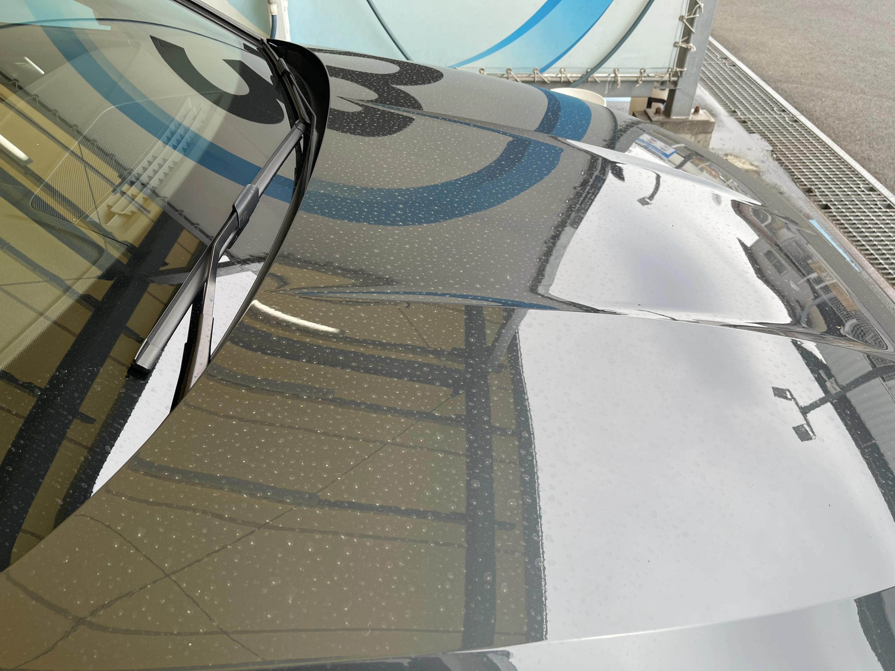
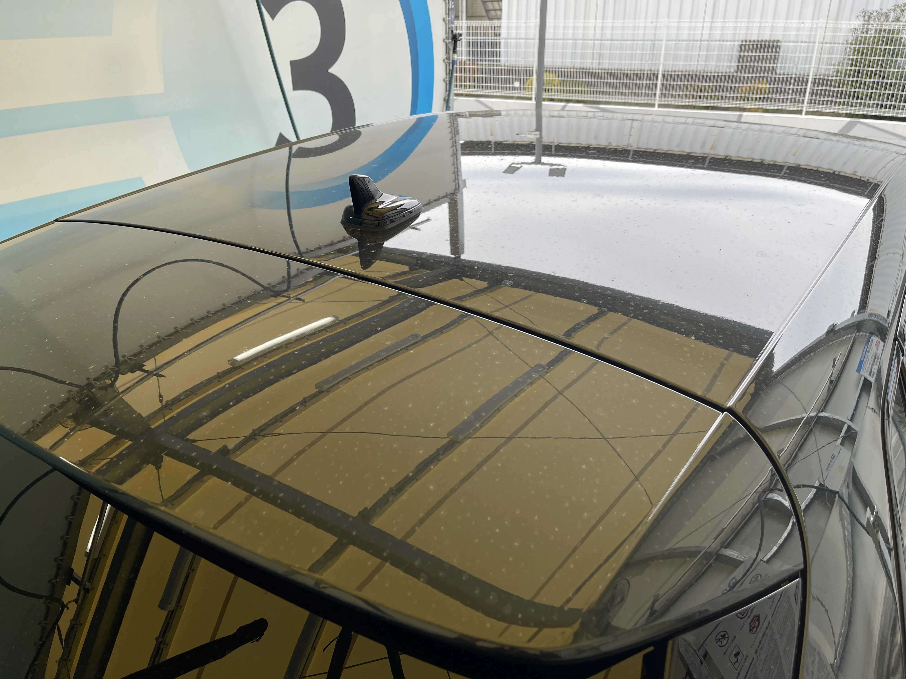
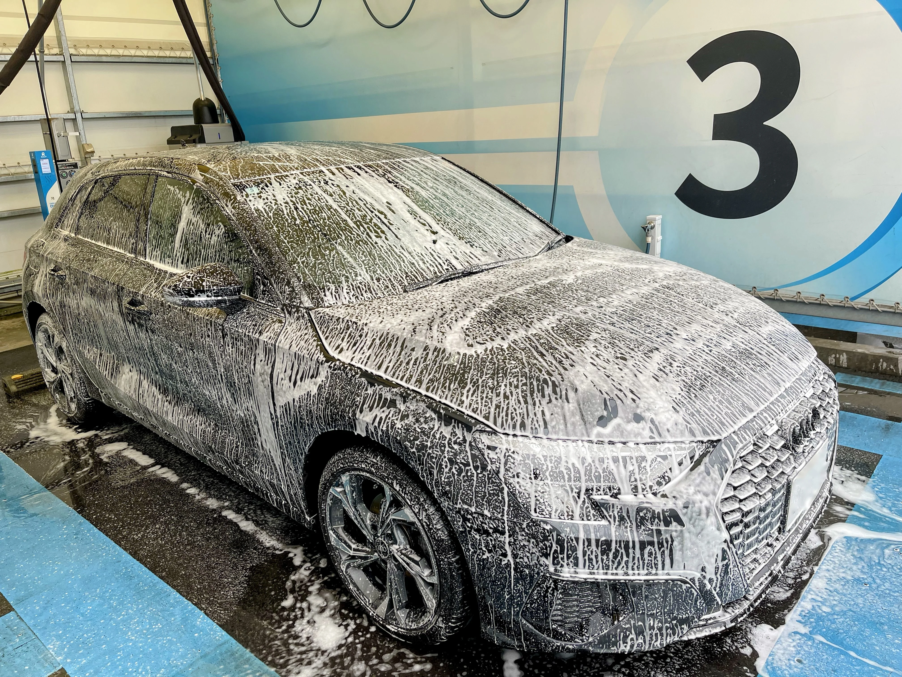
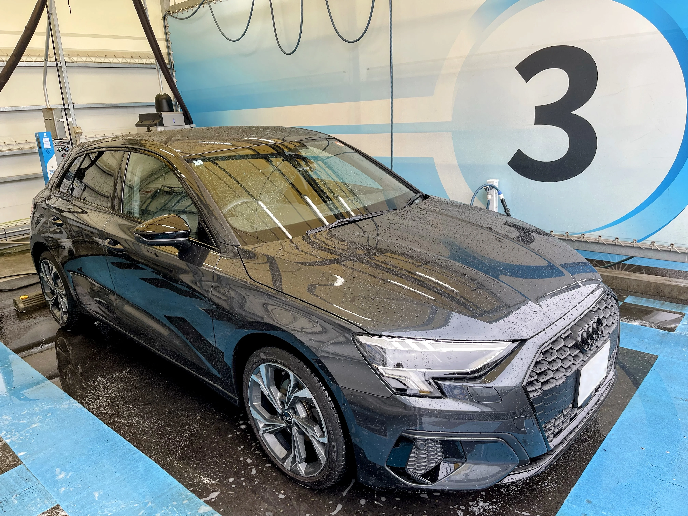
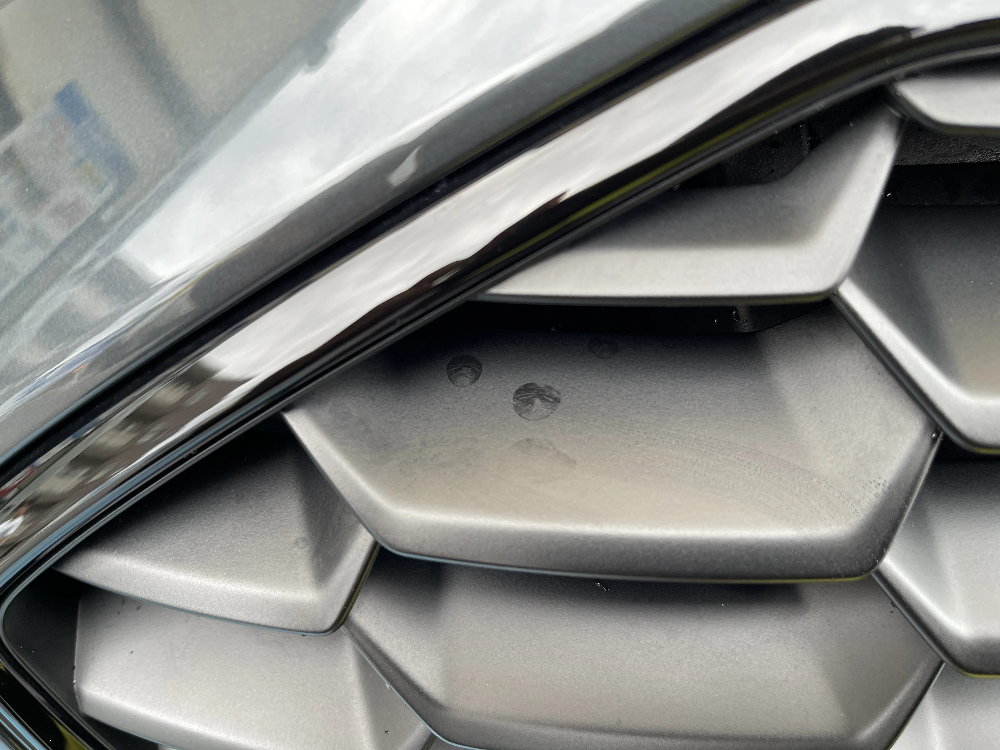
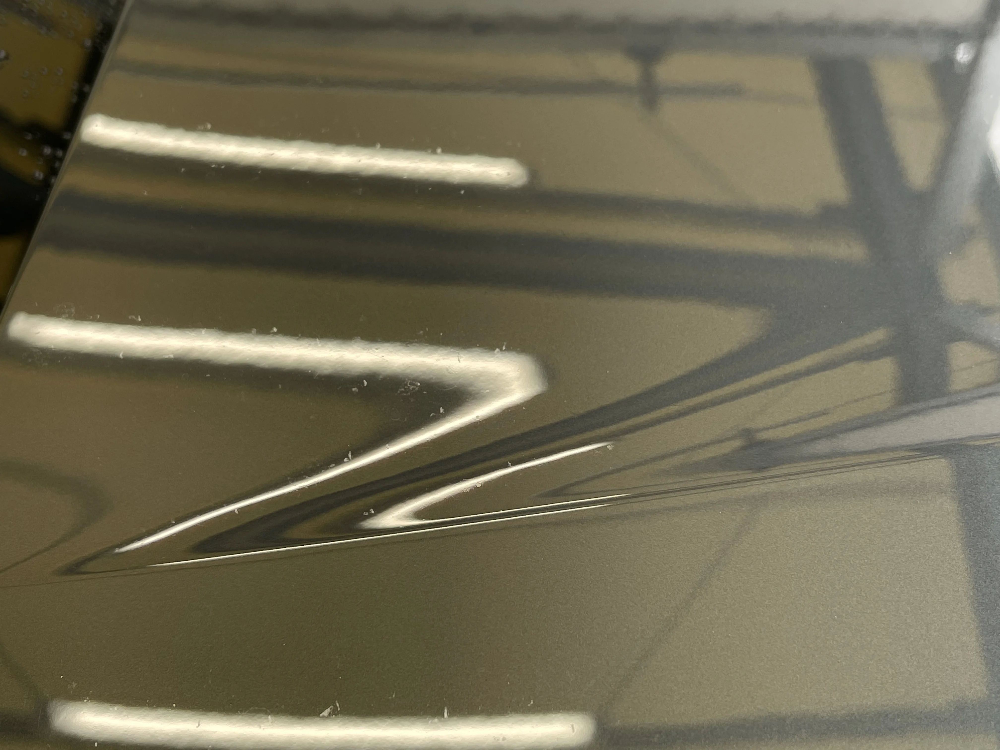

2026/04 の洗車メモ
週末のちょうどいいリセット。
今回もゆるく整えてきました。






← → キーでも切り替えられます
Before / After
← スライドして比較 →
この日の洗車
週末にやった洗車のことを、ゆるく残しておきます。
今回は全体的にうっすらとした汚れと、細かい部分のスケールが気になる状態でした。
やる前の感じ
パッと見はそこまで汚れていないものの、ボンネットやルーフは水ジミが残っていて、映り込みで見るとムラがある状態。
細かいところも、じわじわ汚れが乗ってきている感じでした。
泡をのせる
とりあえず全体に泡をのせてリセット。強く落とすというより、一度リフレッシュするイメージで進めました。
流した後
泡を流した段階でも、全体のツヤはしっかり戻ってきた印象。
軽く洗うだけでも、ベースが整う感じがあって気持ちいい。
グリル周りのスケール
細かい部分はやっぱり残りやすい。グリル周りは水垢が溜まりやすく、近くで見るとくすみが目立つ状態でした。
スケール除去後
軽く処理すると、グリルのくすみが抜けてかなりスッキリ。
こういう細部が整うと、全体の印象も一段引き締まる感じ。
取れない汚れ
一部は軽い洗車では取りきれない部分もあり。無理に攻めず、今回はここで止めておくことにしました。
まとめ
⏱ 時間：2時間くらい（撮影込み）
🧴 内容：プレ洗浄 → 泡 → 軽めのスケール処理
✨ 効果：ツヤ復活＋細部の印象改善
ゆるくやっても、このくらいは整う。
花粉は、早めに落としておきたいところ。
今回は酸性シャンプーも忘れてしまったので、
そのあたりはまた次回に。